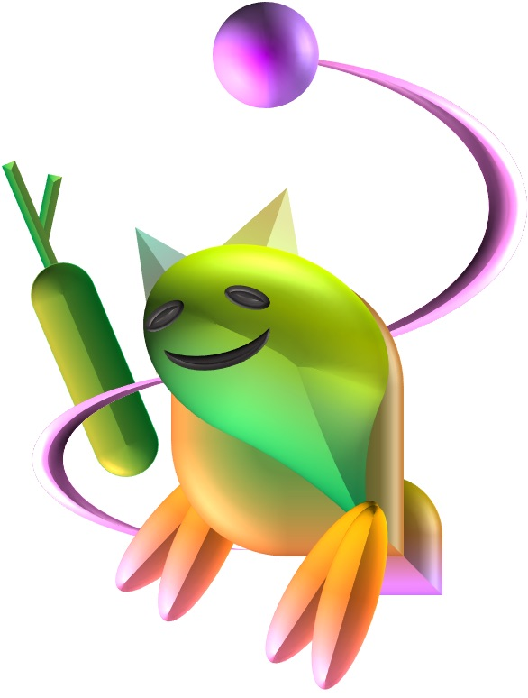
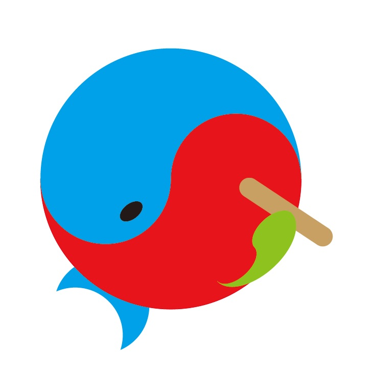

自己紹介
私は＊＊＊＊です。
・・・誰だよ！
なんかインターネット上に実名を晒すってのはあまりやりたくなかったのでこうしました。
これを評価してくださる先生方には僕が誰かわかっていると思うので
＊＊＊＊でも良いかなって思ってます。
私は今、19歳。大学の一回生です。
理想と現実の狭間を彷徨しつつ、それを現実に落とし込む方法を探しています。
最近は、一年と少し前からツクールで遊んでいます。
最近、新しい製品が出たということで操作の練習もかねてRPGを作っています。
敵キャラは原画をChikoさんが描いてくれています。
なかなか独特なので、ぜひ見て見てください。

ハムスターだそうです。
さて、最近インスタをはじめました。
というのも、こうやって個人のページを作るのなら、そこに何かしらへのリンクを貼ってみたいなと思ったからです。
まぁ、だからと言ってこれっきりにするのも、もったいないので、気が向いたときにでも色々とやっていきたいと思ってます。 これだけのために作ったインスタ

くじらは昔から好きな動物。
りんごは、美味しいから好き。
このイラストは企画で使うということで、夜中の3時頃に適当に作ったもの。
意外と気に入ったので、今後も使っていきたい。